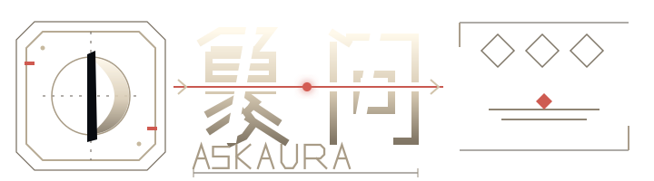

NIGHT VOYAGE · 001
问一件事，
看两种象。
牌象整理情绪，卦象观察趋势，
最后只留下今天能做的一步。
比如：我应该继续推进这段关系，还是先退一步观察？
0 / 120
选择观察方式
你的问题与结果仅对你可见，象问为你保留。
霞鹜新致宋屏幕版 · IBM Plex Sans SC · IBM Plex Sans Condensed

月面坐标、航线与断续字骨构成独立游戏标题；叙事气质最强，适合章节页、档案与结果报告。
左侧为放大轮廓；下方首页保留真实导航尺寸。快捷键：1 / 2 / 3 切换字体，4 / 5 / 6 切换字标，D / M 切换视图。页面只用于视觉比较。